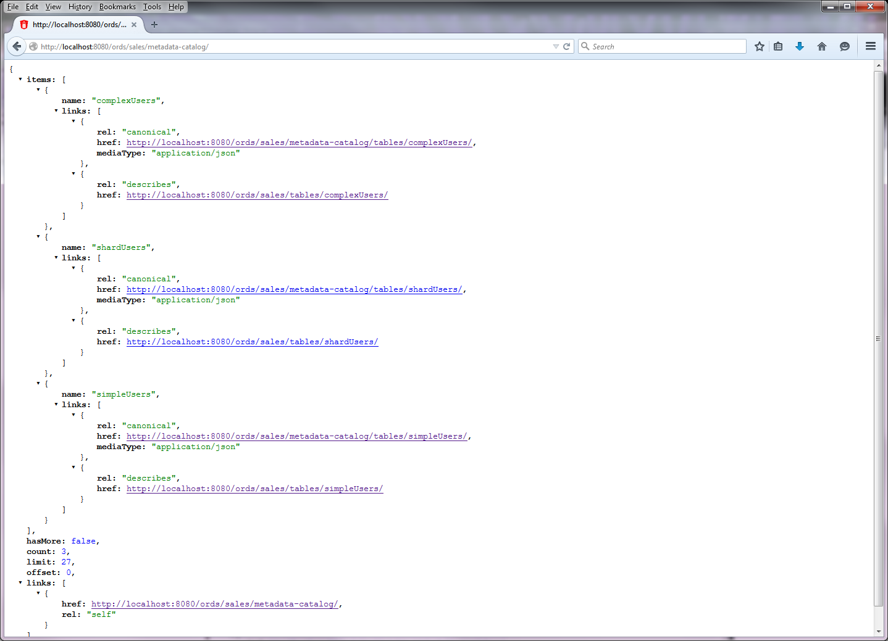
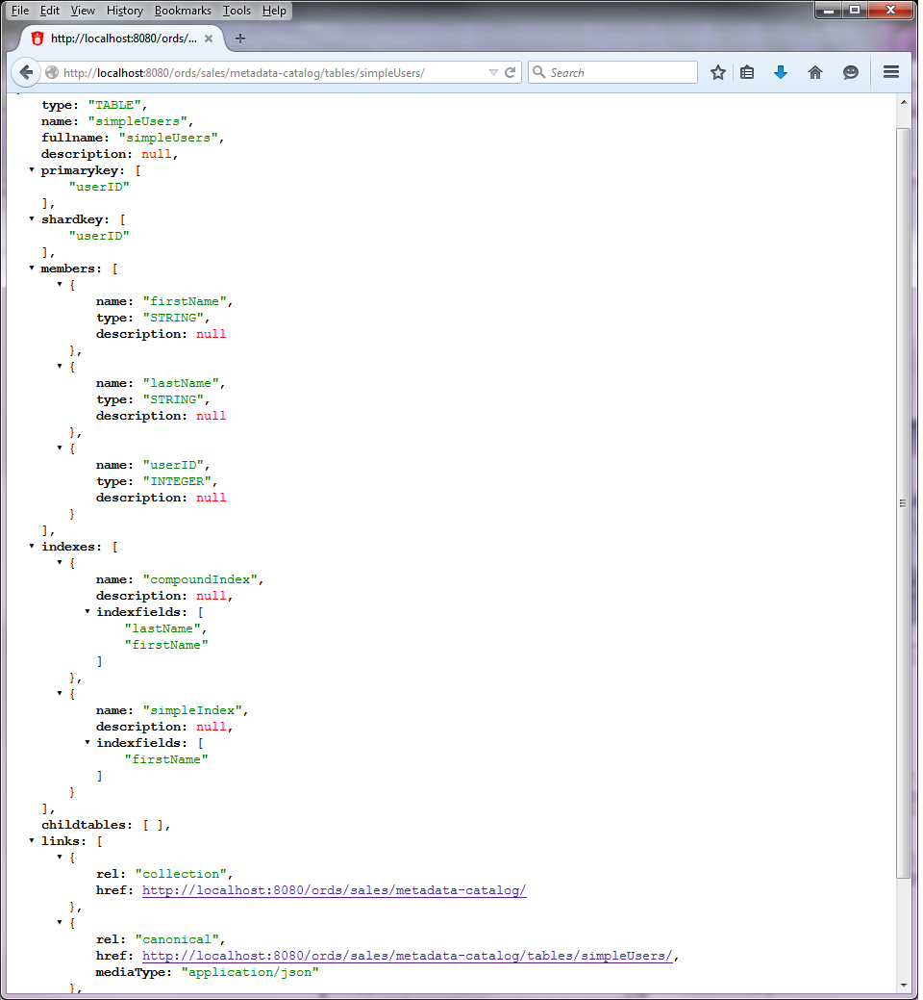
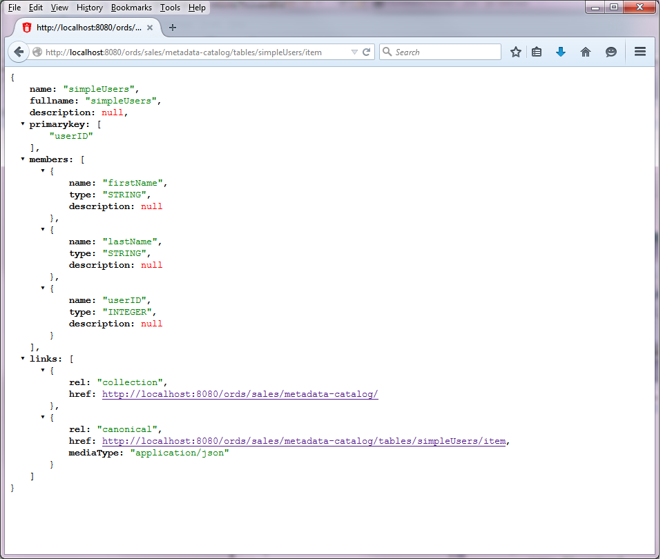
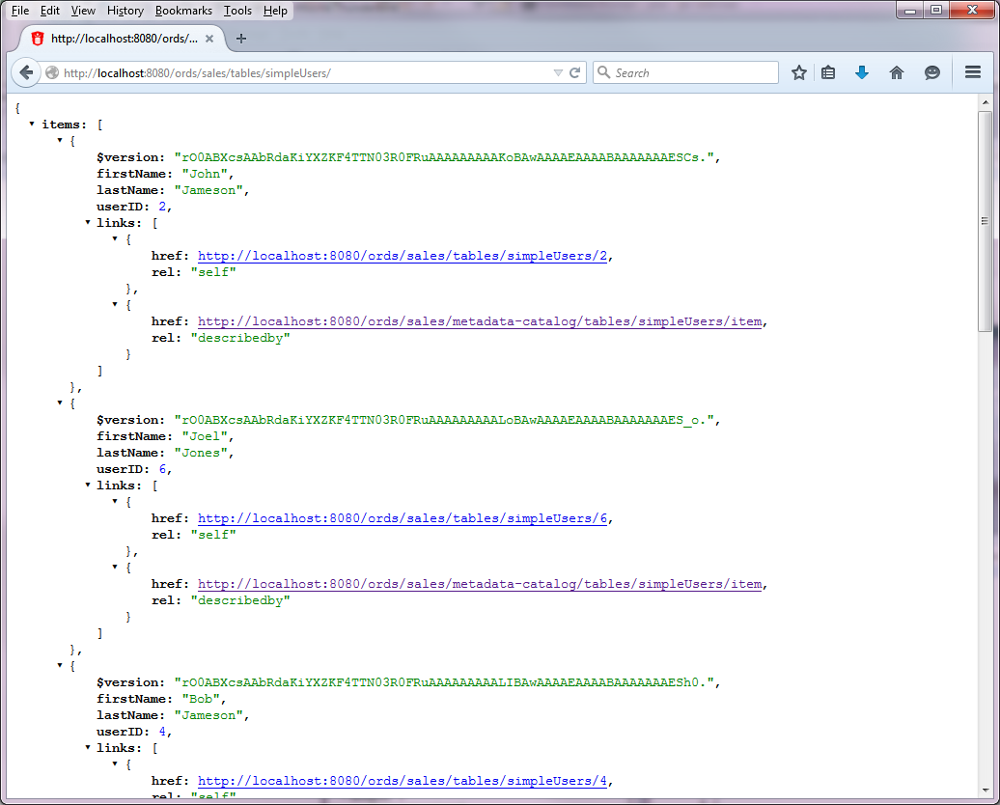
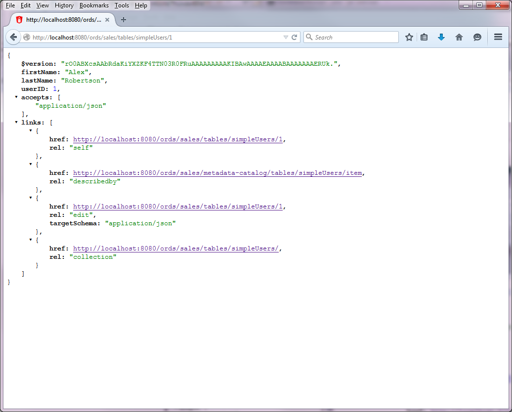
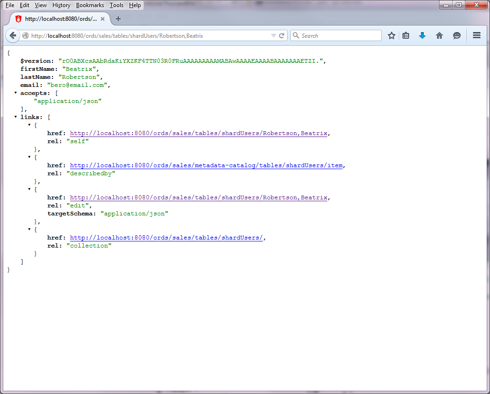
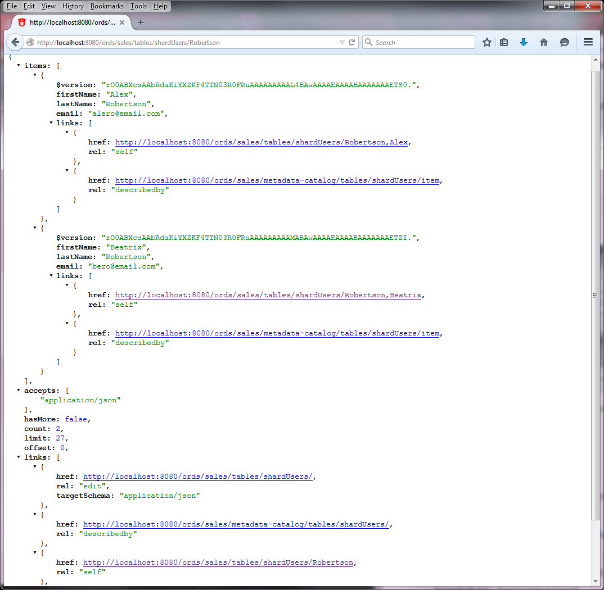
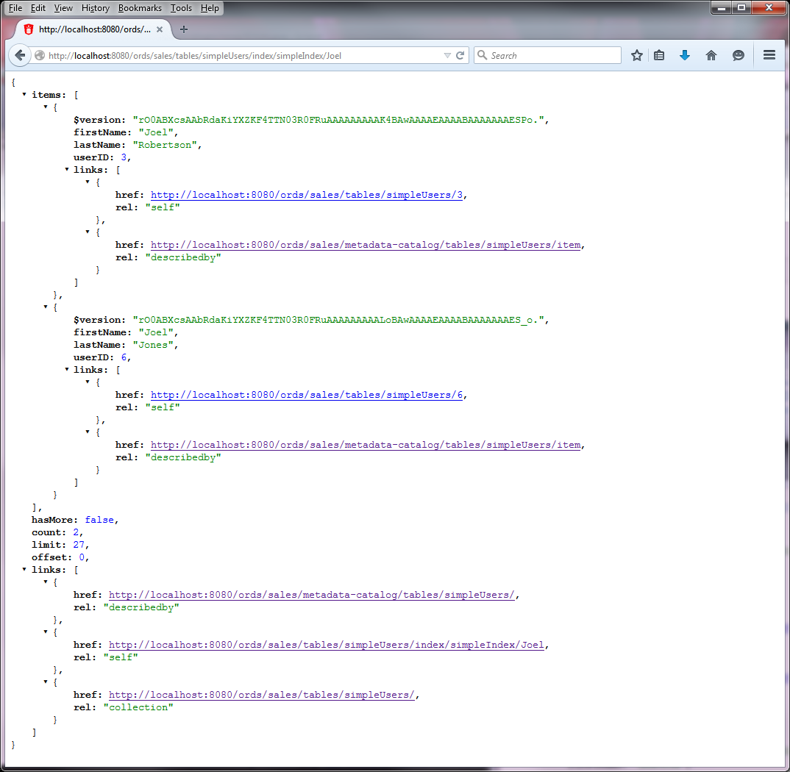
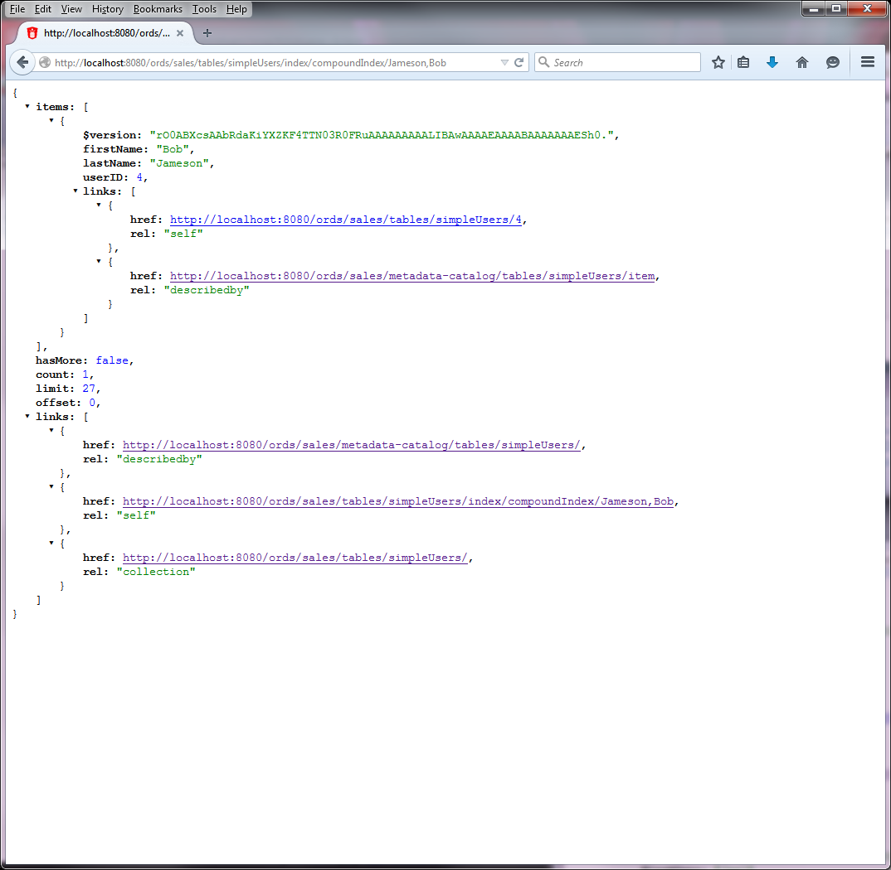
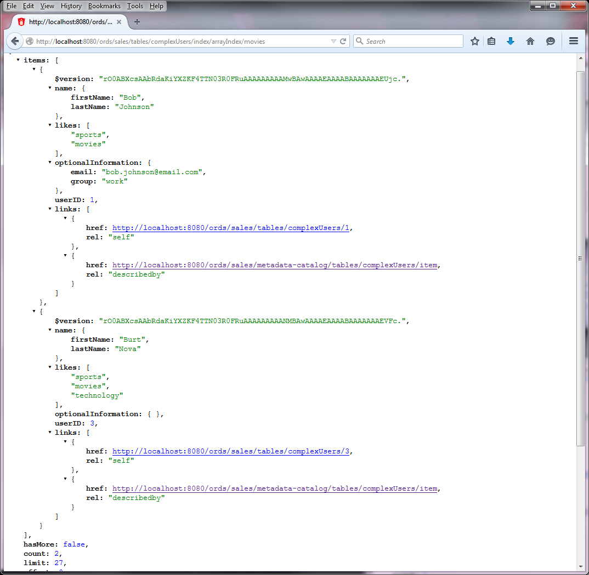

This document describes how to get started with accessing Oracle NoSQL Databases using Oracle REST Data Services.
This document assumes your environment has been configured as follows:
localhost:8080/ords/In order to setup Oracle REST Data Services in standalone mode for Oracle NoSQL Database follow these commands
First, create an empty directory for the configuration data.
In the folder where Oracle REST Data Services was installed, enter the following command in a command prompt:
java -jar ords.war standalone
This will prompt for
The location to store configuration data (enter the directory you created for this purpose)
The location of the APEX static resources (just press return)
The http port (take the default of 8080)
The Oracle REST Data Services will now start in standalone mode. Since you will now want to register Oracle NoSQL Database stores then stop Oracle REST Data Services by aborting this command.
If you have followed the instructions in the Oracle NoSQL Database installation then you will have a KVLite store called kvstore which is configured to run on localhost and listening on port 5000.
In the folder where Oracle REST Data Services was installed, enter the following command in a command prompt:
java -jar ords.war nosqladd --pagelimit 27 sales kvstore localhost:5000
The response will be
secure=>false
pagelimit=>27
storeAlias=>sales
storeName=>kvstore
hostPorts=>localhost:5000
This will create a mapping called 'sales' to this store.
In the folder where Oracle REST Data Services was installed, enter the following command in a command prompt:
java -jar ords.war nosqladd salesp kvstore localhost:5000 dev
The response will be
secure=>false
storeAlias=>salesp
storeName=>kvstore
hostPorts=>localhost:5000
roles=>dev
This will create a mapping called 'salesp' to this store and will require Oracle REST Data Services users with a role of "dev" to be able to access the store
Follow the Oracle NoSQL Database instructions to start the KVLite store
Make sure the Oracle REST Data Services system is started and receiving requests
In a web browser enter the following URL:
http://localhost:8080/ords/sales/metadata-catalog/
You will see the following in the browser

Make sure the Oracle REST Data Services system is started and receiving requests
In a web browser enter the following URL:
http://localhost:8080/ords/sales/metadata-catalog/tables/simpleUsers/
You will see the following collection resource in the browser

In a web browser enter the following URL:
http://localhost:8080/ords/sales/metadata-catalog/tables/simpleUsers/item
You will see the following item resource in the browser

Follow the Oracle NoSQL Database instructions to start the KVLite store if not already started
Make sure the Oracle REST Data Services system is started and receiving requests
In a web browser enter the following URL:
http://localhost:8080/ords/sales/tables/simpleUsers/
You will see the following in the browser

In a web browser enter the following URL:
http://localhost:8080/ords/sales/tables/simpleUsers/1
You will see the following in the browser

In a web browser enter the following URL:
http://localhost:8080/ords/sales/tables/shardUsers/Robertson,Beatrix
You will see the following in the browser

In a web browser enter the following URL:
http://localhost:8080/ords/sales/tables/shardUsers/Robertson
You will see the following in the browser

Follow the Oracle NoSQL Database instructions to start the KVLite store if not already started
Make sure the Oracle REST Data Services system is started and receiving requests
In a web browser enter the following URL:
http://localhost:8080/ords/sales/tables/simpleUsers/index/simpleIndex/Joel
You will see the following in the browser

In a web browser enter the following URL:
http://localhost:8080/ords/sales/tables/simpleUsers/index/compoundIndex/Jameson,Bob
You will see the following in the browser

In a web browser enter the following URL:
http://localhost:8080/ords/sales/tables/complexUsers/index/arrayIndex/movies
You will see the following in the browser

To demonstrate creating a valid HTTP request we will use the cURL command line tool (Install cURL using the preceding link if necessary), in a real application this request would be performed by the client making a HTTP request, for example performing an XMLHttpRequest.
Follow the Oracle NoSQL Database instructions to start the KVLite store if not already started
Make sure the Oracle REST Data Services system is started and receiving requests
Here the body of the request is a JSON document containing the data to be inserted
{ "userID": 104, "firstName": "Bob", "lastName": "Johnson"}
Enter the following command in a command prompt
curl -i -H "Content-Type: application/json" -X PUT -d "{\"userID\": 104, \"firstName\": \"Bob\", \"lastName\": \"Johnson\"}" "http://localhost:8080/ords/sales/tables/simpleUsers/"
The output will be
HTTP/1.1 200 OK
Content-Type: application/json; charset=UTF-8
Content-Location: http://localhost:8080/ords/sales/tables/simpleUsers/104
ETag: rO0ABXcsAAYC5a2Fp3hHLajIZEw7k4elAAAAAAAAAO8BAwAAAAEAAAABAAAAAQAADYs.
Location: http://localhost:8080/ords/sales/tables/simpleUsers/104
Here the body of the request is a JSON document containing the data to be inserted
{ "userID": 108, "firstName": "Bob", "lastName": "Johnson"}
Enter the following command in a command prompt
curl -i -H "Content-Type: application/json" -X POST -d "{\"userID\": 108, \"firstName\": \"Bob\", \"lastName\": \"Johnson\"}" "http://localhost:8080/ords/sales/tables/simpleUsers/"
The output will be
HTTP/1.1 201 Created
Content-Type: application/json; charset=UTF-8
Content-Location: http://localhost:8080/ords/sales/tables/simpleUsers/108
ETag: rO0ABXcsAAYC5a2Fp3hHLajIZEw7k4elAAAAAAAAAP8BAwAAAAEAAAABAAAAAQAAEKE.
Location: http://localhost:8080/ords/sales/tables/simpleUsers/108
Here the body of the request is a JSON document containing the data to be inserted
{ "userID": 104, "firstName": "Bob", "lastName": "Johnson"}
Enter the following command in a command prompt
curl -i -H "Content-Type: application/json" -X PUT -d "{\"userID\": 104, \"firstName\": \"Bob\", \"lastName\": \"Johnson\"}" "http://localhost:8080/ords/sales/tables/simpleUsers/104"
The output will be
HTTP/1.1 200 OK
Content-Type: application/json; charset=UTF-8
ETag: rO0ABXcsAAYC5a2Fp3hHLajIZEw7k4elAAAAAAAAAQMBAwAAAAEAAAABAAAAAQAAEWg.
Content-Location: http://localhost:8080/ords/sales/tables/simpleUsers/104
Follow the Oracle NoSQL Database instructions to start the KVLite store if not already started
Make sure the Oracle REST Data Services system is started and receiving requests
Enter the following command in a command prompt
curl -i -X DELETE "http://localhost:8080/ords/sales/tables/simpleUsers/4"
You will see the following in the client
HTTP/1.1 204 No Content
Enter the following command in a command prompt
curl -i -X DELETE "http://localhost:8080/ords/sales/tables/shardUsers/Robertson"
You will see the following in the client
HTTP/1.1 204 No Content
Follow the Oracle NoSQL Database instructions to start the KVLite store if not already started
Make sure the Oracle REST Data Services system is started and receiving requests
Note a DDL request can only contain one statement.
Here the body of the request is a textual string containing the data to be inserted
CREATE TABLE IF NOT EXISTS myUsers
(firstName STRING,
lastName STRING,
userID INTEGER,
PRIMARY KEY (userID))
Enter the following command in a command prompt
curl -i -H "Content-Type: text/plain" -X POST -d "CREATE TABLE IF NOT EXISTS myUsers (firstName STRING,lastName STRING,userID INTEGER,PRIMARY KEY (userID))" "http://localhost:8080/ords/sales/ddl/"
This will send the body of the request to the KVLite store for processing. If the processing does not complete within a certain time-out then it is put into background and a polling location will be returned. The user can request progress by using that location. If it is completed then the location of the new resource is returned.
In this example, if it did not complete within the time-out the response is
HTTP/1.1 202 Accepted
Location: http://localhost:8080/ords/sales/ddl/tasks/15
if it did complete within the time-out the response is
HTTP/1.1 200 OK
Location: http://localhost:8080/ords/sales/metadata-catalog/tables/myUsers/
Enter the following command in a command prompt
curl -i -X GET "http://localhost:8080/ords/sales/ddl/tasks/15"
You will see the following in the client since the creation of the table has completed
HTTP/1.1 200 OK
Location: http://localhost:8080/ords/sales/metadata-catalog/tables/myUsers/